da clic en la imagen para agrandar la infografía
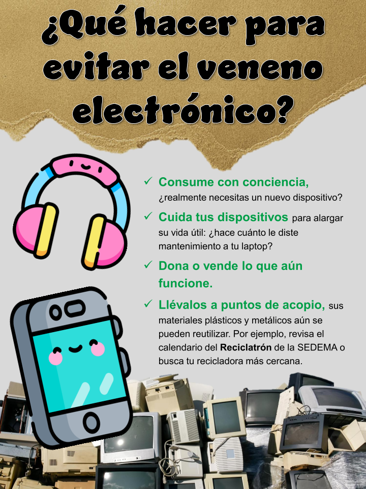
¿Qué hacer para evitar el veneno electrónico?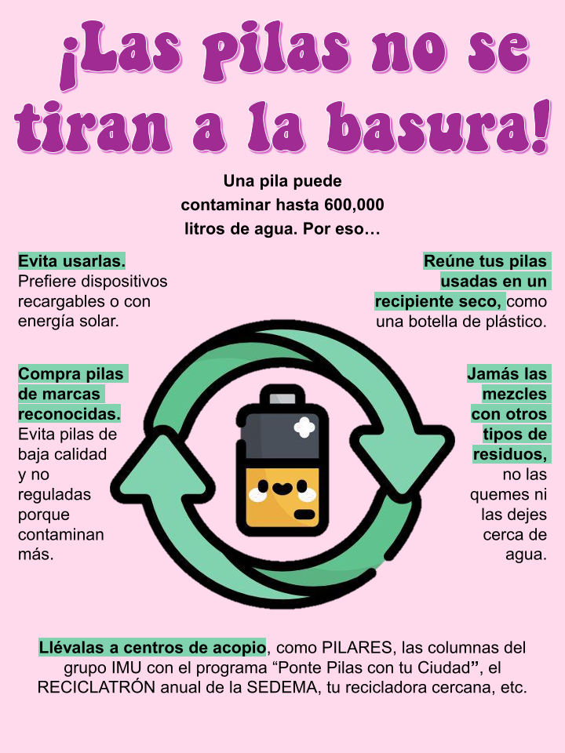
¡Las pilas no se tiran a la basura!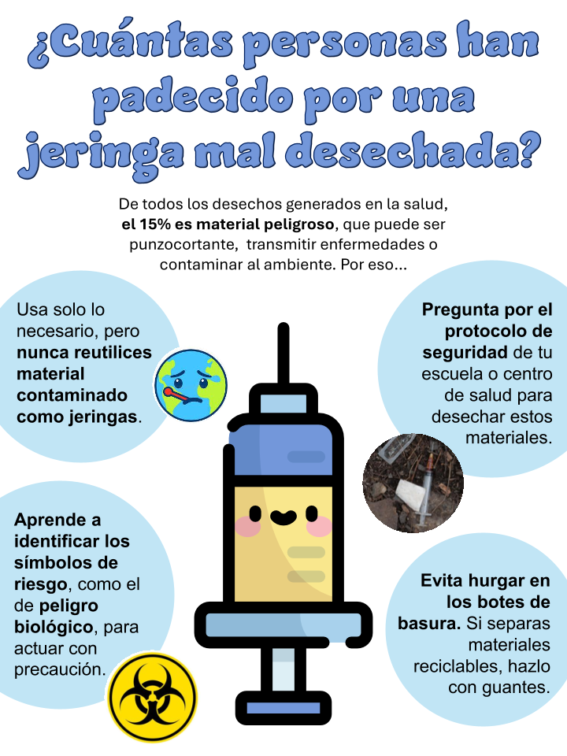
¿Cuántas personas han padecido por una jeringa mal deshechada?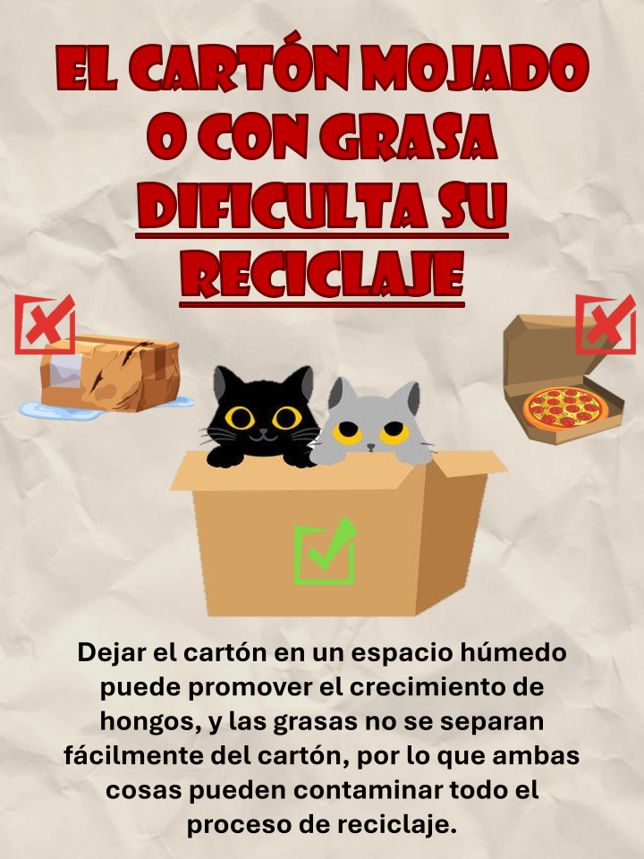
El cartón mojado o con grasa dificulta su reciclaje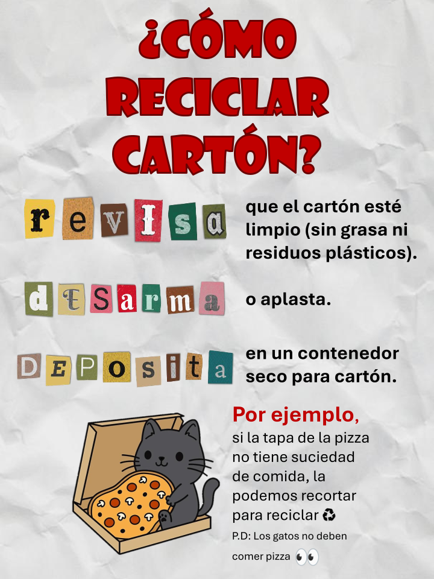
¿Cómo reciclar cartón?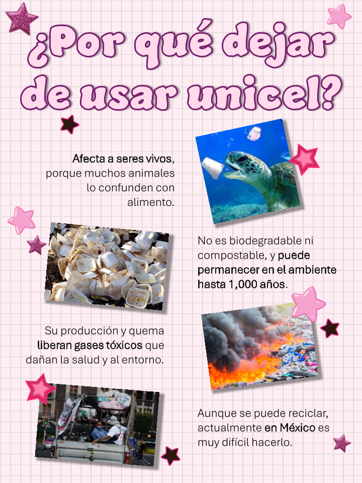
¿Por qué dejar de usar unicel?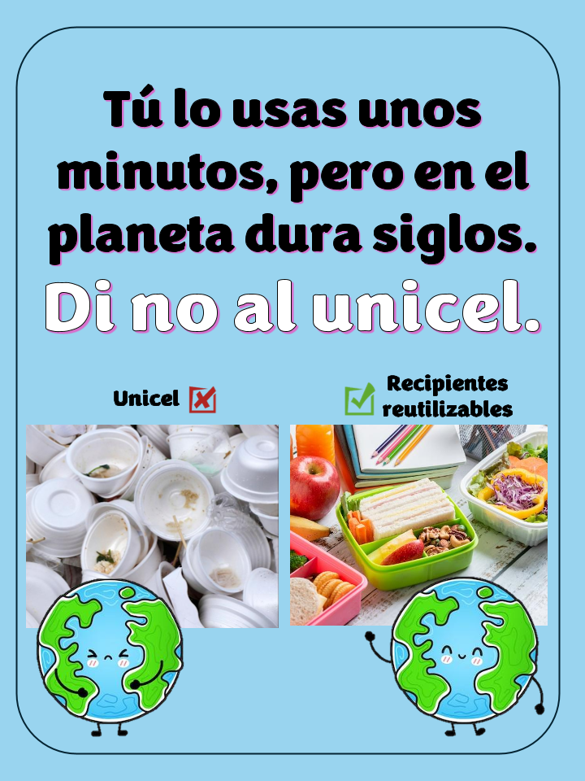
Tú lo usas unos minutos, pero en el planeta dura siglos. Di no al unicel.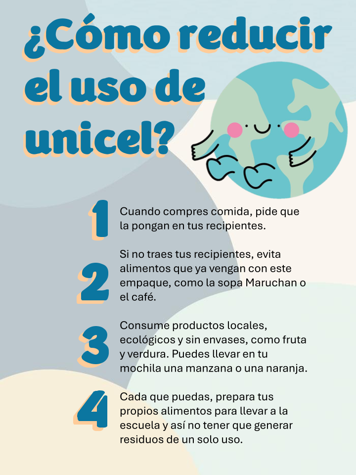
¿Cómo reducir el uso de unicel?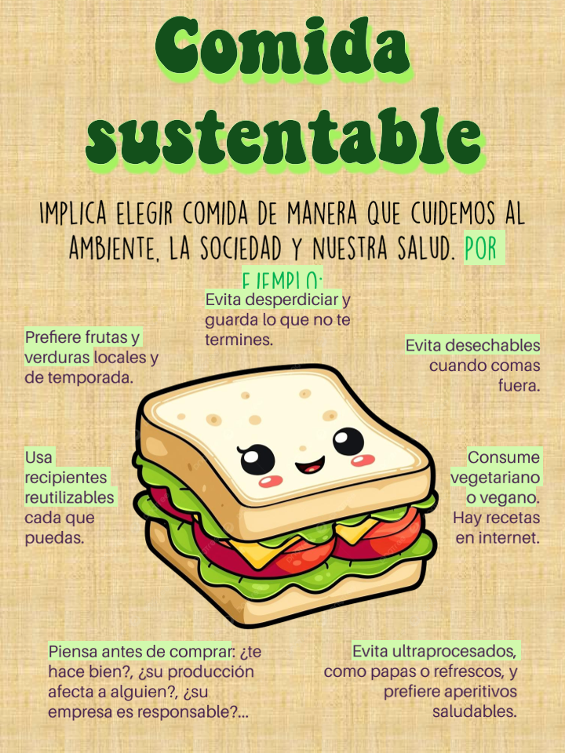
Comida sustentable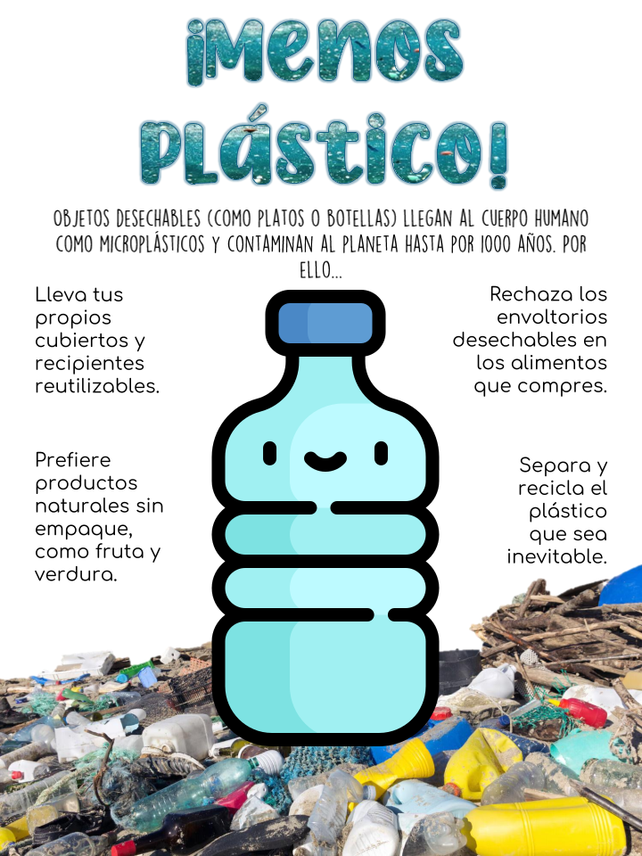
¡Menos plástico!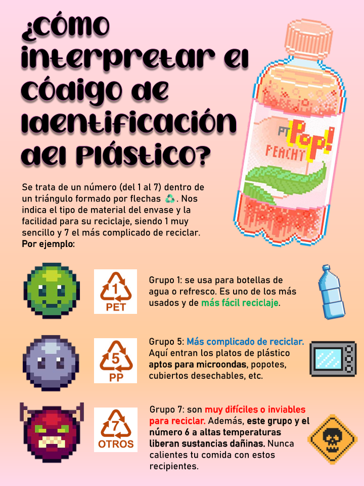
¿Cómo interpretar el código de indentificación del plástico?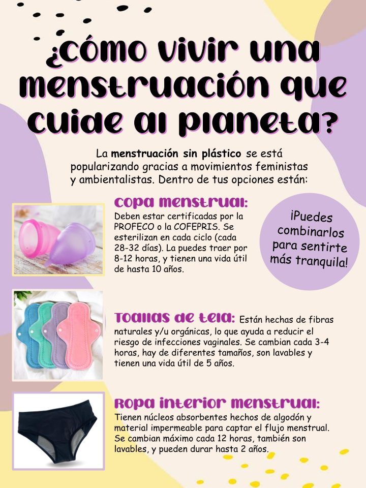
¿Cómo vivir una menstruación que cuide al planeta?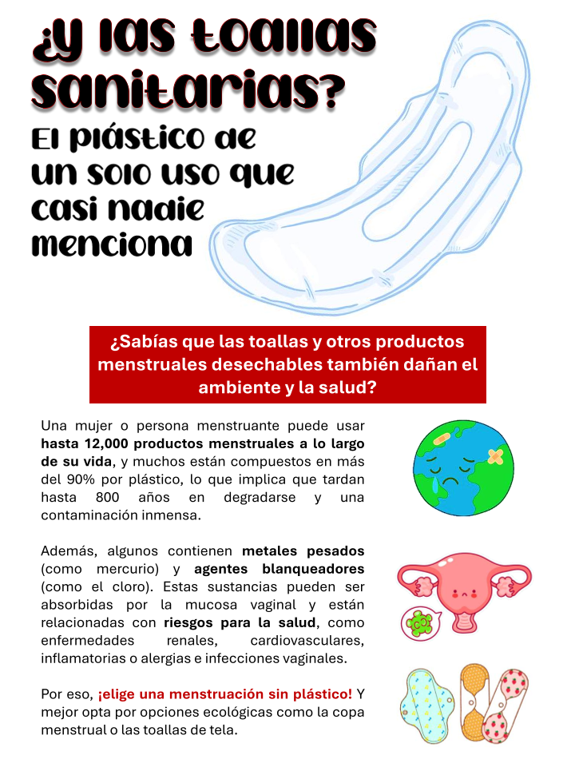
¿Y las toallas sanitarias?